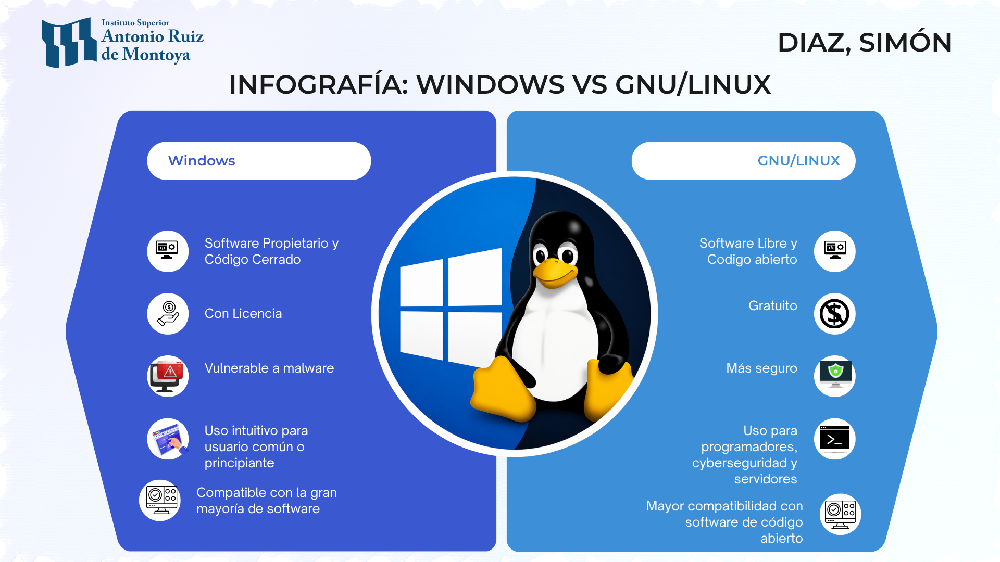

Windows vs GNU/Linux: dos enfoques del sistema operativo

Área: Formación Específica
Asignatura: Sistemas Operativos
Fecha: Mayo 2026
Introducción
Windows y GNU/Linux son dos de los sistemas operativos más utilizados en la actualidad. Ambos cumplen la misma función esencial: administrar los recursos del hardware, coordinar la ejecución de los programas y proporcionar una interfaz para que el usuario interactúe con la computadora. Sin embargo, fueron desarrollados bajo modelos y filosofías muy diferentes.
Mientras Windows responde a un modelo de software propietario administrado por Microsoft, GNU/Linux se basa en los principios del software libre y el desarrollo colaborativo. Estas diferencias influyen en aspectos como la distribución, la personalización, la seguridad y el uso que se les da en distintos ámbitos.
La diferencia crucial no es solo técnica, sino ideológica. Mientras Microsoft gestiona Windows con un modelo comercial cerrado, GNU/Linux prioriza las cuatro libertades esenciales del software libre.
Windows
Windows es un sistema operativo desarrollado por Microsoft y distribuido mediante licencias propietarias. Su principal característica es la amplia compatibilidad con aplicaciones comerciales y dispositivos de hardware, además de ofrecer una experiencia de uso sencilla e intuitiva para la mayoría de los usuarios.
Características principales:
- Software propietario.
- Código fuente cerrado.
- Licencia comercial.
- Gran compatibilidad con programas y videojuegos.
- Amplio soporte de fabricantes de hardware.
- Orientado al usuario general.
GNU/Linux
GNU/Linux combina el kernel Linux con las herramientas del Proyecto GNU, conformando un sistema operativo distribuido bajo licencias de software libre. Esto permite acceder al código fuente, modificarlo y redistribuirlo respetando las condiciones de la licencia.
Es ampliamente utilizado en servidores, infraestructura de Internet, desarrollo de software y entornos académicos debido a su estabilidad, seguridad y flexibilidad.
Características principales:
- Software libre y de código abierto.
- Acceso al código fuente.
- Generalmente gratuito.
- Alta estabilidad y seguridad.
- Gran capacidad de personalización.
- Amplio uso en servidores y desarrollo.
Tabla Comparativa
| Aspecto | Windows | GNU/Linux |
|---|---|---|
| Licencia | Propietaria | Software libre |
| Código fuente | Cerrado | Abierto |
| Costo | Generalmente de pago | Generalmente gratuito |
| Compatibilidad | Muy alta con software comercial | Muy alta con software libre |
| Seguridad | Alto nivel, pero objetivo frecuente de malware | Muy seguro gracias a su modelo de permisos y desarrollo colaborativo |
| Personalización | Limitada | Muy amplia |
| Uso más frecuente | Equipos personales, empresas y videojuegos | Servidores, desarrollo, investigación y ciberseguridad |
Infografía Comparativa

Infografía comparativa de las filosofías y características de Windows y GNU/Linux.
Conclusión
No existe un sistema operativo universalmente mejor. La elección depende de las necesidades del usuario y del contexto de uso.
Windows destaca por su facilidad de uso y compatibilidad con aplicaciones comerciales, mientras que GNU/Linux sobresale por su estabilidad, seguridad y libertad de personalización. Ambos representan modelos diferentes de desarrollo de software y constituyen referentes fundamentales para comprender la evolución de los sistemas operativos.